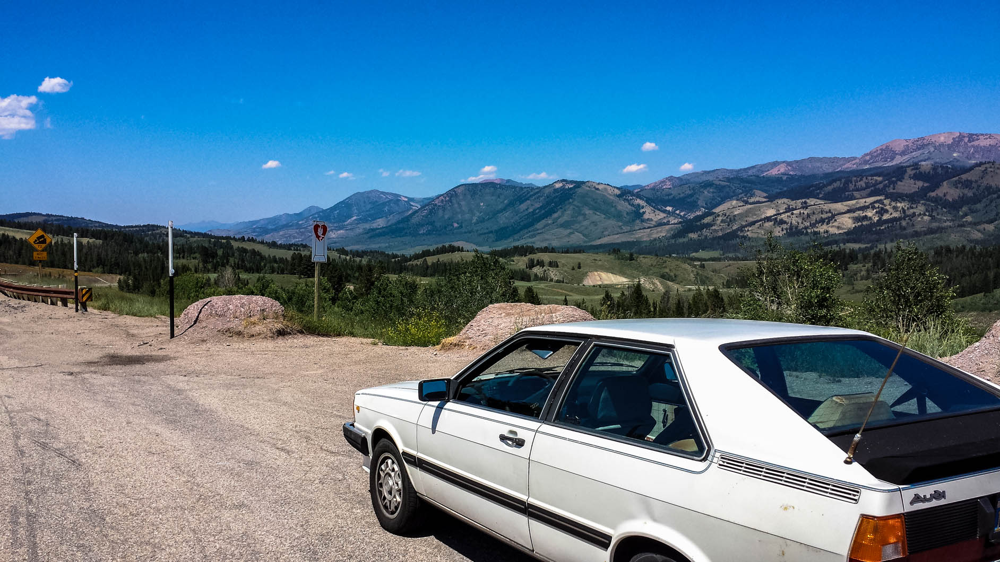
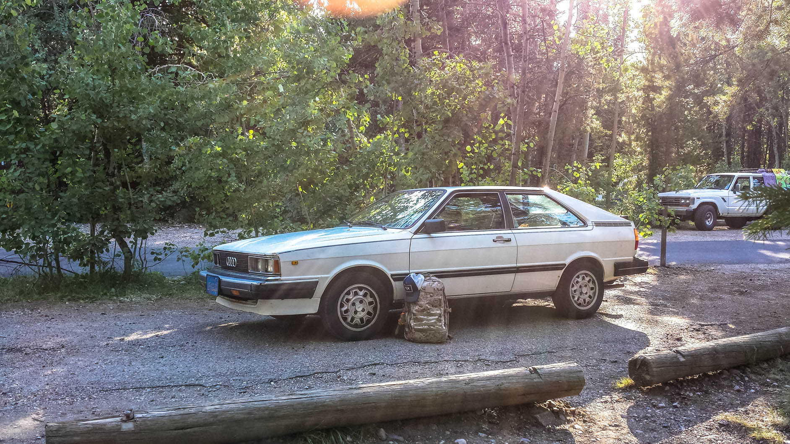
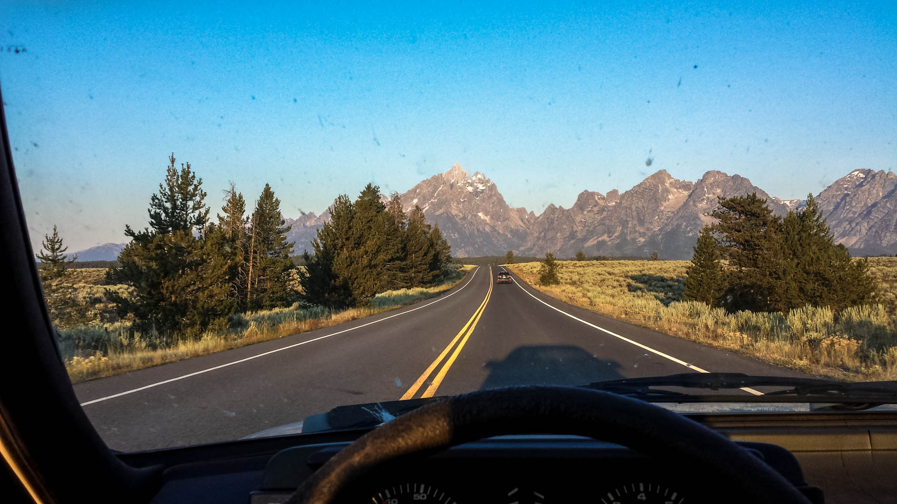
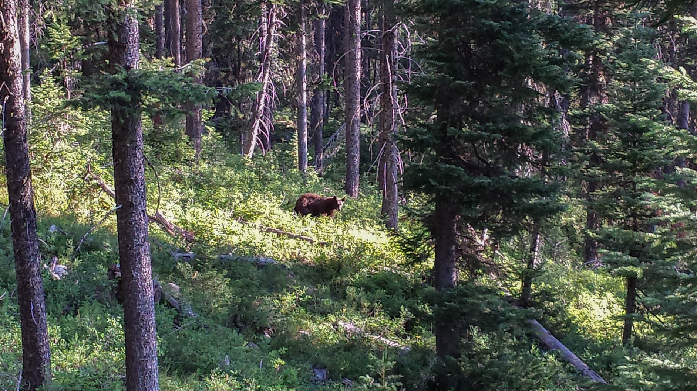
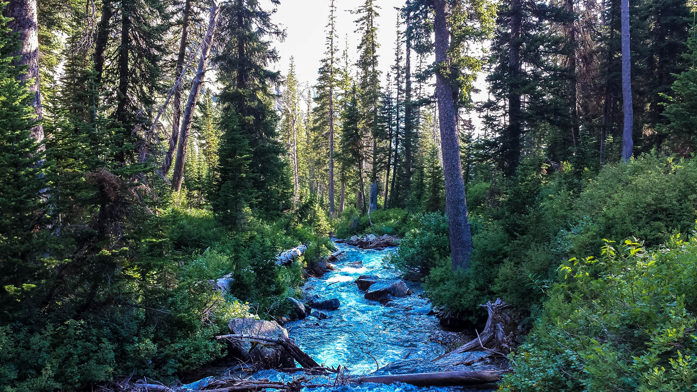
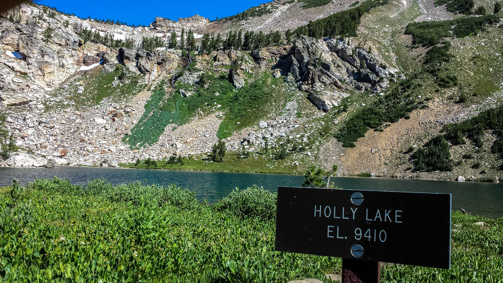
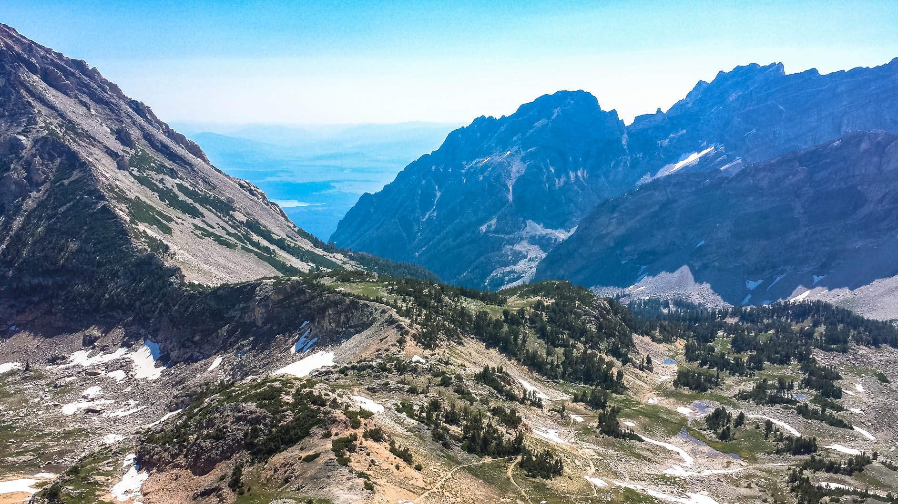
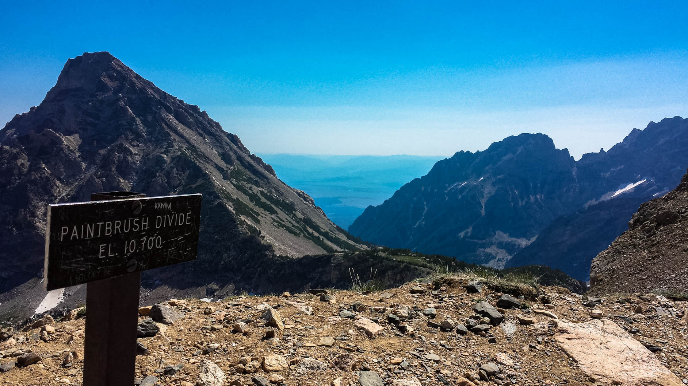

Back to trips | Just the photos, pleaseShow text
Having recently moved to Utah, the wilderness and many epic places are at my fingertips more than ever. What used to be a 18 hour drive from home, Grand Teton National Park was only ever included as parts of epic road trips rather than material for a short weekend jaunt.
But now I was much closer, and one weekend, I woke up and decided to go have a weekend in nature. Particularly I decided to drive to GTNP for the weekend and hike one of my favorite hikes anywhere. The paintbrush divide/Cascade canyon portion of the Teton Crest Trail.
Day 1 - The drive out
I loaded up the old Audi, checked the oil, and made my way to Wyoming. The drive up was very enjoyable and I liked having the windows down with fresh air coming in and the nearly tangible hum of the old machine.
What was once before a 18 hour drive now only takes 5 hours from Utah. I arrived at around 5pm and took a chill walk around the lake and general area. I grabbed a beer and something to eat from the general store at coulter bay village and shortly after sundown came, I was out.
Day 2 - The Hike
The next morning, I cooked up some oatmeal for breakfast, had a few granola bars, striked camp and I was off to the trailhead at String Lake

I started the hike up going counter clockwise around the 19 mile loop that one can make out of paintbrush and cascade canyon going over the divide. This way, you get all of the heavy hiking over with quickly as Paintbrush Canyon is shorter and steeper than Cascade Canyon.
It wasn't long until I found some wildlife. A bear. At first I thought it was a grizzly, and I was excited until I realized it was just a brown coated black bear. The bear seemed a little alarmed at first, but I talked calmly at it saying whatever came to mind in a calm, monotone voice and it stoped caring.
I was excited until I saw something coming down a tree near the bear. At first I though, "man that's gotta be a big squirrel or something.. wait, that's a cub.." so I slowly walked out of there.
Continuing along, I was glad for the great weather, because as I got closer to the divide, I had to start thinking about the possibility of an afternoon lightening storm which happen almost ever day up in the mountains during the summer.
Holy Lake. Almost to the divide at 10,700ft. and it would be all downhill from there.
 I made it to the top with great weather all around and took a short break. I had still quite a bit to go, albeit down hill, and not a ton of time to do it, since I wanted to drive the 5 hours back home that day as well.

Likely my absolute favorite place in the world

The hike went well, but my boots were in a bad way and needed replacing, such did my feet feel also. A great 19 mile hike behind me, I was glad to see my car. I stopped to gas up, grabbed a medium pizza at Mountain High Pizza Pie, and headed back to Utah going east from Jackson, WY into Idaho and then south on I-15.